Monte Carlo Path Tracer with Adaptive Sampling
CS184/284A Note 3 Write-Up
Names: Howard Yao

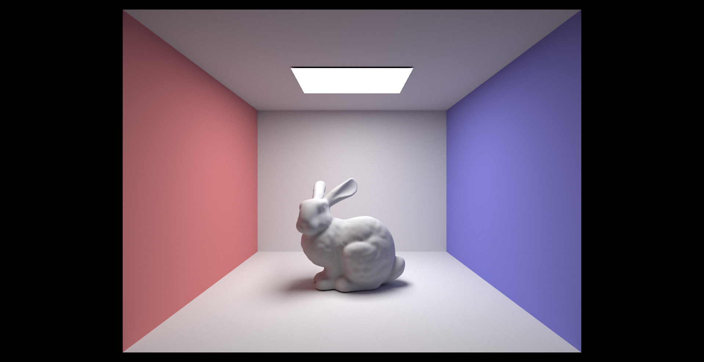
Use the S key for all screenshots; use the command -r 480 360 to set the resolution for all screenshots.
Breaking down an example command:
-t flag defines the # of CPU thread to render the scene
-s flag defines the # of samples per pixel. In this example, for each output pixel, the path tracer sends 64 different light rays into the scene and average their result to give smother lighting
-l flag defines the # of samples per area light when estimating the direct illumination
-m flag defines the # of max bounce (ray depth) of the light ray tracing
-r flag takes in two inputs and sets the output resolution of the scene as x * y
-f flag saves the rendered image as a specified file in the out folder, this is interchangeable with the s hotkey
The last parameter is the path to the COLLADA file. A COLLADA file is an XML-based file format developed by Sony that is commonly used to exchange 3D assets between different graphics software.
Overview
In this project, we will be building a Monte Carlo path tracer that renders 3D scenes with realistic ray tracing. The tracer will be able to simulate how rays travel through a scene and interact with different surfaces/materials. We’ll start from basic ray generation from camera space into world space and perform primitive intersection tests, and gradually build up the major components of the ray tracing pipeline, including bounding box acceleration, direct illumination, material sampling, global illumination, and optimization methods including Monte Carlo importance sampling, Russian roulette, and adaptive sampling.
We will be utilizing many mathematical tools along this process to boost the time and memory efficiency of the path tracer, as ray tracing is widely considered a computationally expensive operation. This project will engage a much more concrete understanding of how a physically-based renders work — from shooting the first ray out of the camera to estimating the final radiance of each pixel. Just like a photographer!
Part 1: Ray Generation and Scene Intersection (20 Points)
Ray Generation
The first step of our rendering pipeline is to establish how rays are generated and used to project a 3D scene onto the camera. More specifically, we need to determine how rays travel from each camera pixel into the scene, interact with the object, and return information about the visible geometry. By correctly mapping these ray-object interactions back to individual pixels, we can open the window for us to visualize the 3D scene through a 2D screen.

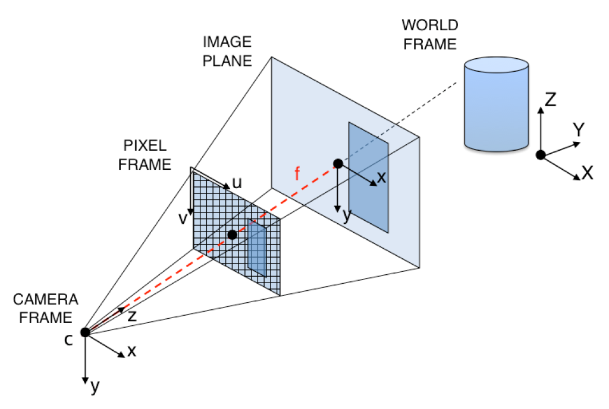
With the path tracer functionality established earlier, we can manually define the resolution of the images we wish to display/render. This parameter defines the size of each pixel and the number of pixels in the final image and, consequently, the number of pixel locations from which the camera rays will be generated. Using the specific resolution, we can determine the 2D location of each pixel and normalize these coordinates so the ray-generation process remains consistent across different image resolutions.
Note that the camera itself can be represented as a single point, while the image plane is positioned one unit away from the camera origin, typically along the camera’s z-axis. Using the camera origin together with the normalized pixel coordinates, we can map each pixel onto this image plane. From there, basic trigonometry allows us to construct a camera ray that originates from the camera and passes naturally through the corresponding pixel location.
Shown below:

More specifically, we use the camera's field of view to construct the image plane. Because this image plane is continuous, we can easily interpolate a valid ray direction for any continuous coordinate on the plane, rather than being restricted to discrete pixel centers.
In our implementation, we use and to determine the half-width and half-height of the image plane at a unit distance from the camera origin. With these dimensions, we can map a normalized image coordinate onto its exact position on the camera plane and construct the corresponding ray direction through that point.
Since the camera looks toward the negative (z)-direction in camera space, the ray direction can then be written in the form
We normalize this vector so that it represents only a direction. Since this direction is initially defined in camera space, we then multiply it by the camera-to-world transformation matrix c2w to rotate it into world space. The final ray therefore starts at the camera position and travels toward the corresponding point on the image plane.

One of the other parameters we define that would affect ray generation is # of samples per pixel , note that the image plane is continuous in our image plane. In other words, each pixel has a range of directions it can generate, as such we will randomly sample n many rays within the region of each pixel and average them to avoid aliasing. Where n is given as a instruction parameter.
For every sample, we first obtain a position inside the pixel, normalize it relative to the width and height of the image, and then call generate_ray() with that coordinate. This allows different samples of the same pixel to generate slightly different rays, which becomes important when we average multiple samples to reduce aliasing.

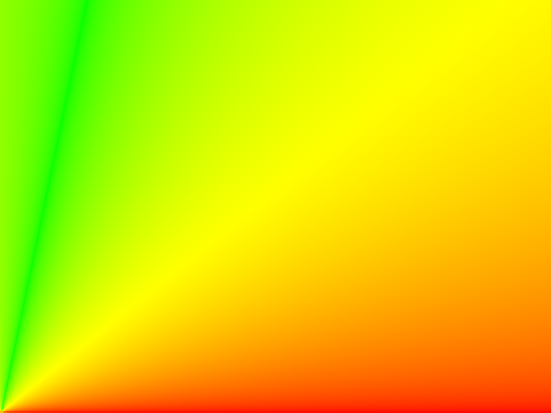
"args": [ "-t", 8, "-r", 800, 600, "-f", "banana.png", "../../../dae/keenan/banana.dae" ]Triangle Intersection
After generating a ray, the next step is to determine which object in the scene it intersects.
A ray can be expressed as
where
- is the ray origin
- is its direction
- describes how far we travel along the ray.
Each ray also contains a valid interval between min_t and max_t. We only consider intersections that fall within this range. Whenever we find a valid intersection closer than the current max_t, we update max_t to the new intersection distance. In this way, as we continue testing primitives, we naturally keep track of the closest visible surface along the ray.
For this part of the project, we implemented intersection tests for both triangles and spheres.
For triangle intersections, we use the Möller-Trumbore algorithm. The main advantage of this method is that it allows us to directly determine both whether a ray intersects the triangle and where that intersection lies within the triangle.
Given three vertices (p_1), (p_2), and (p_3), we first construct two edge vectors:
and
Any point on the triangle plane can then be represented using these two edges:
The values (u) and (v) are barycentric coordinates. For the intersection point to lie inside the triangle, they must satisfy
At the same time, the point must also lie along the ray:
The Möller-Trumbore algorithm solves these two representations together for (t), (u), and (v).
We first calculate a determinant using the triangle edges and the ray direction. If the determinant is very close to zero, the ray is approximately parallel to the triangle plane, so there is no valid intersection.
If the ray is not parallel, we then calculate the barycentric coordinates (u) and (v). These values tell us where the ray hits relative to the three vertices. If (u) or (v) is negative, or if (u+v>1), the ray intersects the triangle's plane outside of the actual triangle, so we reject the intersection.
Finally, we solve for (t), which gives us the distance from the ray origin to the intersection point. We only accept the result if
When a valid intersection is found, we update ray.max_t to (t). This ensures that any later primitive intersection must be closer to the camera in order to replace the current result.
For the full intersection function, we also use the barycentric coordinates to interpolate the vertex normals:
This allows the normal to vary smoothly across the triangle rather than remaining constant over the entire face, producing smooth shading across triangle meshes.
Note that we simplify the intersection equation into matrix form. Unfortunately, we cannot simply get a solution for the system like we used to love to do in NumPy. The triple scalar property and cramer’s rule will be used to solve this system more effeciently, more detail in the implementation:

For triangle intersections, we use the Möller–Trumbore algorithm. Conceptually, we can think of this algorithm as solving for the intersection using Cramer's rule, while expressing the required determinants efficiently through scalar triple products.
At an intersection, these two expressions must describe the same point, so we can write
Letting
and rearranging the equation gives us
This is now a linear system with three unknowns: (u), (v), and (t):
We can solve this system using Cramer's rule. Instead of explicitly constructing and evaluating several determinants, however, we make use of the scalar triple product
which is equivalent to the determinant of a matrix whose columns are (a), (b), and (c).
The determinant of our original system can therefore be written as
This value also tells us whether the system has a unique solution. If (D) is close to zero, the three vectors do not span a full 3D volume, which in our case means that the ray is approximately parallel to the triangle plane. We therefore reject the intersection when the magnitude of (D) falls below a small epsilon.
Using Cramer's rule, we can then solve for the three unknowns as
The values (u) and (v) are also the barycentric coordinates of the intersection point. This gives us a convenient way to determine whether the intersection actually lies inside the triangle. A valid point must satisfy
If any of these conditions fail, the ray still intersects the infinite plane containing the triangle, but the intersection lies outside of the triangle itself.
One useful result of solving for (u) and (v) is that we can reuse them for normal interpolation. Since the third barycentric weight is (1-u-v), we calculate the surface normal as
Therefore, the same calculation that determines whether the ray hits the triangle also gives us the weights needed to smoothly interpolate information across its surface.

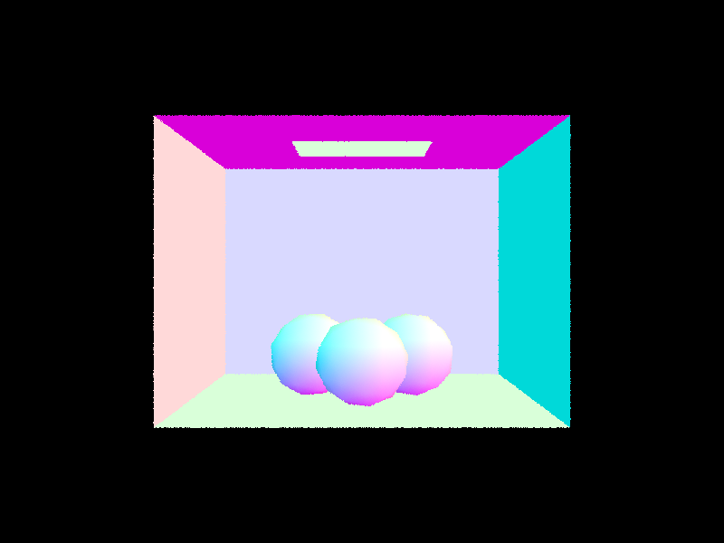
"args": "-t",8,"-r",800,600,"-f","CBgems.png","../../../dae/sky/CBgems.dae"Sphere Intersection
For sphere intersections, we begin from the sphere equation
where (c) is the center of the sphere and (R) is its radius.
We then substitute the ray equation
into the sphere equation. Expanding the result gives us a quadratic equation in (t):
Where
a =
b =
c=
The discriminant tells us whether the ray intersects the sphere. If the discriminant is negative, the quadratic has no real solutions, meaning the ray misses the sphere entirely. Otherwise, we obtain two possible intersection distances corresponding to the locations where the ray enters and exits the sphere.
We sort these two values and check the closer intersection first. If it does not lie inside the ray's valid range, we check the second one. Once we find the nearest valid intersection, we again update ray.max_t.
After finding the intersection point (p), the surface normal is simply the direction from the center of the sphere to that point:
Because every point on a sphere is exactly one radius away from its center, this directly gives us the outward-facing unit normal.

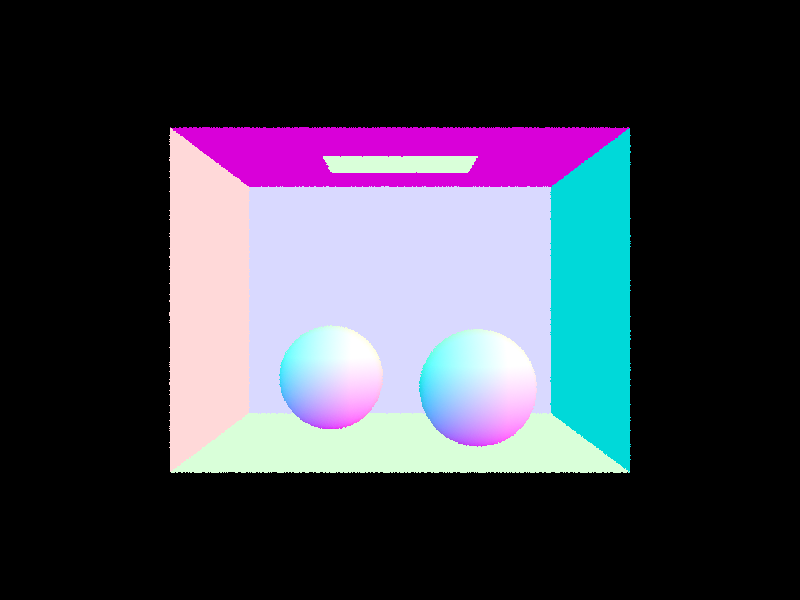

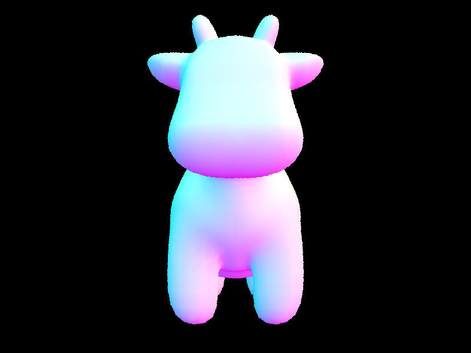
Part 2: Bounding Volume Hierarchy (20 Points)
Walk through your BVH construction algorithm. Explain the heuristic you chose for picking the splitting point.
After implementing primitive intersections, our renderer is technically capable of rendering an entire scene(despite its rainbow-like color). However, directly testing every ray against every primitive quickly becomes impractical as the scene becomes more complex. For a mesh containing hundreds of thousands of triangles, repeating all of these intersection tests for every camera ray introduces a massive amount of unnecessary computation.
To solve this problem, we introduce a Bounding Volume Hierarchy, or BVH. Instead of treating every primitive independently, we organize nearby primitives into a binary tree of progressively smaller bounding boxes. Before testing the actual primitives, we first test whether the ray intersects their bounding box. If the ray misses a bounding box, we immediately know that it must also miss every primitive contained inside it.
This allows us to discard large portions of the scene using only a small number of intersection tests.
Constructing the BVH
We construct our BVH recursively. Each node represents a collection of primitives and stores an axis-aligned bounding box(AABB) that completely contains all of them. I love this abbreviation btw :)
We begin by iterating through the primitives assigned to the current node and expanding a bounding box to include the bounding box of each primitive. Once this process finishes, the resulting box represents the spatial region occupied by the entire group.
If the number of primitives is smaller than our specified max_leaf_size, we stop subdividing the node. We store the start and end iterators inside the node and treat it as a leaf of the BVH.
Otherwise, we need to divide the primitives into two smaller groups.
The main question here is where should we split?
For our implementation, we first examine the dimensions of the current bounding box:
This gives us the spatial extent of the primitives along the x, y, and z axes. We choose the axis with the largest extent as our splitting axis.
The intuition is that the longest axis gives us the most spatial separation between primitives. Splitting along a very short axis would likely produce two groups that still overlap heavily, while splitting along the longest dimension gives us a better chance of separating the geometry into two distinct regions in space.
Once the axis is selected, we divide the primitives based on the positions of their bounding-box centroids.
Instead of choosing an arbitrary coordinate such as the geometric midpoint of the bounding box, we use the median primitive centroid as our split. We apply std::nth_element to rearrange the primitives such that the primitive at the middle iterator is the median along the selected axis.
nth_element is an algorithm that divides a set of elements by a mid pivot and is able to achieve this in O(n). The algorithm itself is inspired by the idea of quicksort in data structures.
Conceptually, if the centroid coordinates along our chosen axis are
we choose the median value
and divide the primitives into approximately equal-sized groups on either side.
We then recursively construct another BVH node for each half:
Using the median gives us an important practical advantage: both recursive calls receive roughly the same number of primitives. This prevents our BVH from becoming extremely unbalanced and also guarantees that neither recursive call receives the exact same primitive range as its parent.
I luv AVL Tree!!!
As the recursion continues, the original collection of scene geometry is progressively divided into smaller spatial groups until every leaf contains at most max_leaf_size primitives.
This approach is known as Median Split BVH
Bounding Box Intersection
Once the BVH is constructed, we need an efficient way to determine whether a ray intersects each node's bounding box.
Since our BVH uses axis-aligned bounding boxes(AABB), we can apply the slab intersection method.
We can think of an axis-aligned box as the intersection of three slabs: one along x, one along y, and one along z. For each axis, we calculate the values of t where the ray enters and exits that slab.
Starting from the ray equation
we can solve for t along one coordinate:
For the x-axis, for example, the two sides of the bounding box give us
and
We perform the same calculation for y and z.
Because the ray direction may be positive or negative, the first value we calculate is not always the entry point. We therefore take the smaller value as the entry time and the larger value as the exit time for each slab.
The ray is inside the complete bounding box only during the interval where all three slab intervals overlap. Therefore, the final entry point is the largest of the individual entry values:
while the final exit point is the smallest of the exit values:
A valid bounding-box intersection exists as long as
and this interval overlaps the valid range of the ray.
This gives us a very inexpensive way to determine whether it is even possible for the ray to intersect any primitive contained within a BVH node.
Traversing the BVH
With both the hierarchy and bounding-box intersection implemented, we can now traverse the BVH to search for primitive intersections.
Just like traversing a binary search tree, starting from the root node, we first test the ray against the node's bounding box. If the ray does not intersect the box, we immediately return because none of the primitives inside that node can possibly be intersected.
If the ray does intersect the bounding box, there are two possibilities.
If the node is a leaf, we directly test the ray against the small collection of primitives stored inside it.
If the node is an interior node, we recursively test its left and right children.
This creates a filtering process as the ray moves down the tree. Large regions of the scene are rejected near the top of the BVH, while primitive intersection tests are only performed once we reach a small bounding box that the ray actually passes through.
For has_intersection, we only care whether any intersection exists. Therefore, as soon as one child or primitive reports an intersection, we can immediately return true.
For the full intersect function, however, we need the closest intersection. We therefore continue traversing all BVH nodes that the ray can still validly intersect.
The ray.max_t value that we updated in Part 1 becomes especially useful here. Whenever a primitive finds a closer intersection, it reduces max_t. Any later bounding box or primitive that lies completely beyond this distance can then be ignored automatically.
In this way, primitive intersection and BVH traversal work together to continuously narrow down the closest visible surface.
Results
With BVH acceleration implemented, we can now render scenes containing significantly more geometry. These scenes would otherwise require testing every ray against every primitive in the mesh.

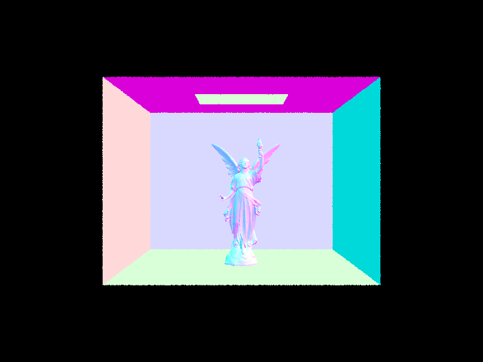

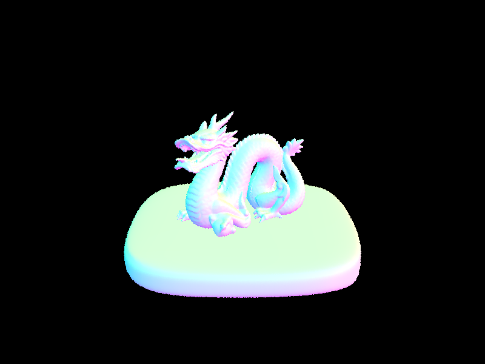

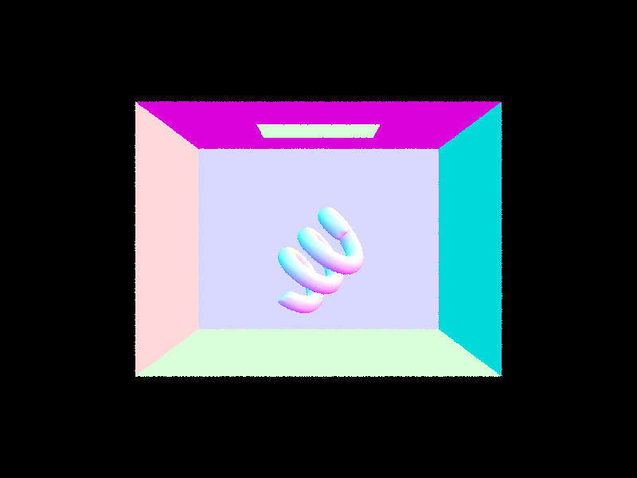
Comparision
| Scene | Without BVH | With BVH | Speedup |
|---|
CBlucy.dae | 63s | ~1s | 63x |
dragon.dae | 84s | ~1.6s | 52.5x |
CBcoil.dae | 56s | ~1s | 56x |
Across these scenes, enabling BVH acceleration produces a significant reduction in rendering time. Without a BVH, each ray must be tested against essentially every primitive in the scene, so the amount of work increases directly with the number of primitives. With our BVH, most primitives are eliminated through bounding-box tests before an actual triangle or sphere intersection is ever performed. The improvement becomes increasingly noticeable for more complex meshes, since a single failed bounding-box test can eliminate an entire collection of primitives at once. Our median splitting strategy also keeps the tree reasonably balanced, allowing rays to narrow their search through the scene efficiently instead of traversing long, heavily unbalanced branches.
Part 3: Direct Illumination (20 Points)
Now that we can efficiently find the closest surface intersection of a ray.
For direct illumination, we only consider light that travels directly from a light source to the intersection point. In other words, once a camera ray reaches a surface, we generate additional rays from that point and use them to estimate the incoming light.
The direct lighting term follows the rendering equation:
Here, represents the incoming radiance from direction , represents the BSDF of the surface, and accounts for the angle between the incoming light direction and the surface normal.
Since evaluating this integral analytically is generally impractical, we instead approximate it through Monte Carlo sampling:
The main difference between our two direct-lighting implementations is therefore how we choose the sampled direction and its corresponding probability density .
For Cosine Weighted Hemisphere PDF:
The PDF tells us how often we choose a direction. Because directions with high PDF are sampled more often, we divide by the PDF so we don’t accidentally over-count them.
For diffuse BSDF, the reflectance is constant over all direction for a diffuse material. Thus we would always return regardless of the injecting and leaving direction. Where comes from the integral of over the emisphere since a diffuse material reflects toward all directions.
Zero Bounce Illumination
Zero-bounce illumination refers to light that reaches the camera without bouncing off anything in the scene. In other words, it is only the light that comes from the light source itself. And so, we are only considering objects that are emissive light source that is directly visible to the camera.
For such primitives, it must contains emission by itself describe by the BSDF function, since BSD function is basically emission + BRDF. Implementation shown below:

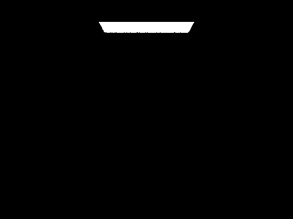
./pathtracer -t 8 -s 16 -l 8 -m 6 -H -f CBbunny_16_8.png -r 480 360 ../dae/sky/CBbunny.daeUniform Hemisphere Sampling
Our first implementation estimates direct lighting by uniformly sampling directions over the hemisphere above the surface.
At every intersection, we first construct a local coordinate system where the surface normal is aligned with the positive z-axis. This makes sampling much simpler because every direction with a positive z-component lies above the surface.
The outgoing direction toward the source of the current ray is transformed into this local coordinate system:
We then repeatedly use our hemisphere sampler to generate a random incoming direction $w_i$ over the upper hemisphere.
For uniform hemisphere sampling, every direction has the same probability density:
Once we generate , we transform it back into world space and construct a new ray starting slightly above the intersection point. This secondary ray acts as a shadow ray.
We trace the shadow ray into the scene. If it eventually intersects an emissive primitive, then the sampled direction contributes direct lighting to our original surface. Otherwise, that sample contributes nothing.
For every successful sample, we accumulate
where
because our local coordinate system aligns the normal with the positive z-axis.
After evaluating all samples, we divide the accumulated radiance by the number of hemisphere samples to obtain our Monte Carlo estimate of the direct illumination.
Although this method is unbiased, it is not particularly efficient. We are sampling the entire hemisphere uniformly even though the light sources usually occupy only a very small portion of it.
For example, if an area light occupies only a small region above the surface, most randomly generated directions will completely miss the light. Those samples perform an intersection test but contribute zero radiance.
As a result, uniform hemisphere sampling tends to produce a large amount of noise unless we use a high number of samples. ☹️
At the camera-ray hit point, randomly shoot rays over the upper hemisphere. If one of those rays directly hits a light, use that light to estimate how much radiance is reflected back toward the camera.
For uniform sampling, we would have gave to consider the # of samples for the area light determined by the configuration parameter. As such, we will also sum the result of multiple reflectance with uniformly distributed reflectance direction and average them at the end.

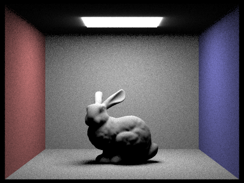
./pathtracer -t 8 -s 64 -l 32 -m 6 -H -f CBbunny_H_64_32.png -r 480 360 ../../../dae/sky/CBbunny.daeImportance Sampling the Lights
Our second implementation improves on this by changing where we draw our samples from.
Instead of choosing a random direction from the entire hemisphere and hoping that it reaches a light, we directly sample points from the light sources themselves. In this way, every generated direction is chosen because it potentially carries incoming radiance.
We begin with the same local coordinate system and outgoing direction as before. However, instead of calling the hemisphere sampler, we iterate through every light in the scene. (This also solves another problem with point light)
For each light, we call its sample_L function at the current intersection point. This directly gives us several useful quantities:
- the incoming direction
- the incoming radiance
- the distance to the sampled point on the light
- the probability density of generating that sample
The sampled direction is initially represented in world space, so we transform it into our local coordinate system before evaluating the BSDF.
If the local z-component is negative, the light lies below the surface and therefore cannot contribute:
Otherwise, we cast a shadow ray toward the sampled light position.
Unlike hemisphere sampling, we already know the exact distance between the surface and the light. We can therefore restrict the shadow ray so that it only searches for intersections before reaching the light:
If another primitive intersects the shadow ray before this distance, the light is occluded and the sample contributes nothing.
If there is no intersection, then the sampled light is visible from the surface and we accumulate
just as before.
For area lights, we take multiple samples and average their contributions. For delta lights such as point lights, however, there is only one possible direction from the surface to the light, so taking multiple samples would simply repeat the same calculation. We therefore only take one sample for delta lights.
The important difference is that our sampling distribution is now concentrated around directions where light actually exists. Rather than wasting most of our rays across the entire hemisphere, we spend them directly on the light sources.
This significantly reduces the variance of our direct illumination estimate.

./pathtracer -t 8 -s 64 -l 32 -m 6 -f bunny_64_32.png -r 480 360 ../../../dae/sky/CBbunny.dae
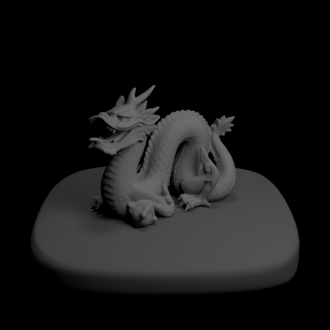
./pathtracer -t 8 -s 64 -l 32 -m 6 -f dragon_64_32.png -r 480 480 ../../../dae/sky/dragon.daeUniform Hemisphere Sampling V.S Light Sampling Results
Because directions are selected without considering where the lights are located, many samples miss the lights entirely. We can therefore see noticeable Monte Carlo noise, especially in regions where only a small range of incoming directions can reach the light.
By sampling the light sources directly on the right, we spend a much larger fraction of our rays evaluating directions that can actually contribute radiance. As a result, we can obtain a significantly cleaner image with the same number of samples.
Area Light Sampling and Soft Shadows
Area lights introduce another interesting effect: soft shadows.
Unlike a point light, an area light occupies a finite region in space. From a point near a shadow boundary, one part of the light may be visible while another part may be blocked by an object.
If all sampled points on the light are blocked, the point is completely inside the shadow. If none are blocked, it is fully illuminated. Between these two cases, only a fraction of the light remains visible, creating the smooth transition of a soft shadow.
We can estimate this visibility by sampling multiple positions across the area light. To observe how the number of light samples affects the result, we render the same scene using one sample per pixel while changing only the number of light rays.
1 Light Ray

With only one light sample, each surface point essentially makes a binary decision about the area light: the sampled position is either visible or blocked. As a result, the soft-shadow region contains a large amount of variance and appears very noisy.
4 Light Rays

With four light samples, we begin sampling different locations across the area light. The renderer can now better estimate the fraction of the light visible from each surface point, so the general shape of the soft-shadow transition becomes clearer, although substantial noise is still visible.
16 Light Rays

At sixteen light samples, the variance becomes much lower. The transition between the fully illuminated and fully shadowed regions becomes smoother, and individual bright or dark samples become less noticeable.
64 Light Rays

With sixty-four light samples, we obtain a much more stable estimate of the area light's visibility. The soft-shadow boundary appears significantly smoother because many different positions across the light source contribute to each estimate.
The progression from 1 to 64 light rays demonstrates the behavior we expect from Monte Carlo integration. Increasing the number of samples does not fundamentally change the lighting calculation, it reduces the variance of our estimate by averaging over more independently sampled positions on the light.
| Light Rays | Samples per Pixel | Soft Shadow Quality |
|---|---|---|
| 1 | 1 | Very noisy |
| 4 | 1 | Shadow structure becomes visible |
| 16 | 1 | Significantly smoother |
| 64 | 1 | Smooth and stable |
Uniform Hemisphere Sampling vs. Light Sampling
Comparing the two approaches, light sampling produces noticeably cleaner direct illumination than uniform hemisphere sampling for the same sampling budget. With uniform hemisphere sampling, we choose directions without considering where the lights are located, so a large fraction of our rays miss every light and contribute zero radiance and appear to be dark. This becomes particularly inefficient when the light occupies only a small solid angle from the intersection point.
Light sampling instead chooses directions directly from the light sources, making most samples potentially useful and greatly reducing the variance of the Monte Carlo estimate. Both methods are estimating the same direct-lighting integral and can converge toward the same result with enough samples, but light sampling reaches a visually clean result much more efficiently and is able to achieve better result with less samples. This difference is especially clear around soft shadows, where accurately estimating partial visibility of an area light requires many useful samples from across the surface of the light.
Part 4: Global Illumination (20 Points)
In Part 3, we only considered light that travels directly from a light source to the surface visible from the camera. While this gives us shadows and direct illumination, it leaves out an important part of how light behaves in the real world: light can bounce between surfaces before eventually reaching the camera.
In this part, we extend our renderer to support global illumination. Rather than requiring our sampled incoming ray to immediately reach a light source, we allow it to intersect another surface and recursively ask how much light arrives at that new point.
Even though we trace the path from the camera toward the light, physically we are estimating light that traveled in the opposite direction.
This allows us to capture effects such as color bleeding, illumination inside regions that are not directly visible to a light, and the softer appearance produced by multiple diffuse reflections.
Sampling the Diffuse BSDF
The first step is to determine how we should choose the next direction of our path.
For a diffuse material, the BSDF is
where is the surface reflectance.
In Part 3, DiffuseBSDF::f simply evaluated this value for a given incoming and outgoing direction. For global illumination, however, we also need to generate the incoming direction itself. We therefore implement DiffuseBSDF::sample_f.
Rather than uniformly sampling the hemisphere, we use a cosine-weighted hemisphere distribution.
The probability density of this distribution is
This distribution gives a higher probability to directions close to the surface normal and a lower probability to directions close to the horizon.
This choice follows directly from the rendering equation, where every incoming radiance contribution already contains a cosine term:
For a diffuse surface, directions near the normal generally contribute more to the integral than directions near the horizon. By sampling according to that cosine distribution, we spend more samples in directions that are likely to have larger contributions.
Inside sample_f, we therefore use our cosine-weighted hemisphere sampler to generate . The sampler also gives us the corresponding PDF
since the local surface normal is aligned with the positive z-axis.
Finally, we return the diffuse BSDF value
The function therefore provides all three quantities required by our Monte Carlo estimator:
- the sampled incoming direction
- the probability density
- the BSDF value
Recursive Indirect Illumination
The main part of our global illumination implementation is at_least_one_bounce_radiance.
As before, we begin by constructing a local coordinate system around the intersection point. In this coordinate system, the surface normal points along the positive z-axis.
We first transform the outgoing ray direction into this local frame:
We can then evaluate the direct illumination at the current surface using the function we implemented in Part 3:
However, direct illumination is only the first bounce. To calculate higher-order illumination, we now generate another ray.
We call
which gives us a new incoming direction in local coordinates.
We then transform this direction back into world space:
and construct a new ray beginning at the current intersection point.
As with our shadow rays, we set the minimum intersection distance to EPS_F so that numerical error does not cause the new ray to immediately intersect the same surface.
The new ray also receives one less remaining bounce:
If this ray intersects another surface, we recursively call at_least_one_bounce_radiance at that new intersection.
This gives us an estimate of the radiance arriving from the sampled direction .
We then propagate that radiance back to the current surface using the Monte Carlo estimator:
where
The important difference from Part 3 is the source of .
In direct illumination, came directly from a light source.
In global illumination, can itself be the result of another surface reflecting light:
This is what allows our ray to continue through multiple surfaces.
Understanding the Recursion
Suppose the camera ray first hits surface A.
At surface A, we sample a direction and hit surface B.
Surface A now needs to know how much light comes from B.
But B does not know that value yet either, so it samples another direction and hits surface C.
Eventually, one of these paths reaches illumination(or not, which then recursively back propagate zero), and the contribution begins propagating backward through the recursion:
At every bounce, the incoming radiance is multiplied by the BSDF and cosine term of the surface it passes through.
As a result, the contribution normally becomes smaller as the number of bounces increases.
Maximum Ray Depth
Without any stopping condition, the recursive path could theoretically continue forever.
We therefore associate each ray with a remaining depth. The original camera ray begins with max_ray_depth, and every newly generated ray decreases the value by one.
Once the depth reaches zero, we stop generating additional bounces.
Russian Roulette
A fixed maximum depth gives us a practical way to stop recursion, but it introduces another problem.
Suppose we always terminate every path at five bounces. Paths longer than five bounces then have zero probability of ever being sampled, even though they may still contribute a small amount of light. This makes the estimator biased.
To address this, we implement Russian Roulette termination.
Instead of always stopping at a particular indirect bounce, we randomly decide whether the path should continue.
Let the continuation probability be
At each eligible bounce, we continue tracing the path with probability and terminate it with probability
At first this seems like we would lose energy because some valid paths are randomly discarded. To compensate, every path that survives is divided by the probability that it survived:
This normalization is keeps the estimator unbiased.
We still ensure that the first indirect bounce is traced whenever indirect illumination is enabled. Russian Roulette is then used for higher-order bounces where the expected contribution becomes progressively smaller.
Combining Direct and Indirect Illumination
Our complete global illumination estimator combines emission with the radiance collected through one or more bounces.
At a high level, we evaluate
The one-or-more-bounce term can itself be separated into
The direct term comes from the light-sampling implementation from Part 3, while the indirect term is generated recursively through BSDF sampling.
This gives us the complete structure of our path tracer:

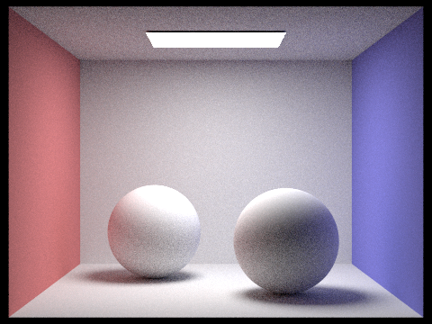
./pathtracer -t 8 -s 1024 -l 16 -m 5 -r 480 360 -f spheres.png ../../../dae/sky/CBspheres_lambertian.daeGlobal Illumination Results
We first render several scenes using both direct and indirect illumination with 1024 samples per pixel.

t 8 -s 1024 -l 4 -m 5 -o 1 -r 480 360 -f global_bunny.png ../../../dae/sky/CBbunny.dae

./pathtracer -t 8 -s 1024 -l 4 -m 5 -o 1 -r 480 360 -f global_spheres.png ../../../dae/sky/CBspheres_lambertian.dae
Compared with direct illumination alone, we can now observe light reaching regions that do not have direct visibility to the light source. We can also begin to see color transfer between nearby surfaces as reflected light carries the color of one surface onto another.
Direct Illumination vs. Indirect Illumination
To isolate the contribution of indirect lighting, we render the same scene once using only direct illumination and once using only indirect illumination.
Direct Illumination Only

./pathtracer -t 8 -s 1024 -l 4 -m 5 -o 1 -r 480 360 -f bunny_direct_only.png ../dae/sky/CBbunny.dae
The direct-only result contains illumination from paths that connect the visible surface directly to a light source. We can clearly see the primary shadows and strongly illuminated regions, but surfaces that cannot directly see the light remain very dark.
Indirect Illumination Only

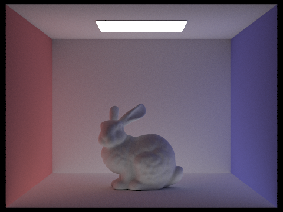
./pathtracer -t 8 -s 1024 -l 4 -m 5 -o 1 -r 480 360 -f bunny_indirect_only.png ../dae/sky/CBbunny.dae
The indirect-only image shows the illumination that would have been completely missing from a direct-lighting renderer. The strongest contribution appears on surfaces that receive reflected light from nearby walls or objects. Color bleeding also becomes especially obvious in this view because the incoming light has already interacted with another colored surface before reaching the point visible to the camera.
Looking at these two results separately makes it clear that Direct illumination establishes the primary lighting structure, while indirect illumination fills in otherwise dark regions and transfers lighting information between surfaces. Their combination is what gives the final image a much stronger sense of spatial integration.
Individual Bounces of Light
To better understand how global illumination builds up, we render CBbunny.dae while isolating individual bounce depths by setting isAccumBounces=false.
Bounce 0

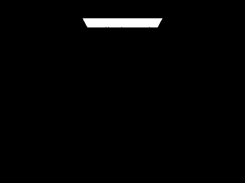
-t 8 -s 1024 -l 4 -m 0 -o 0 -r 480 360 -f bunny_bounce0.png ../../../dae/sky/CBbunny.dae
At bounce zero, we only observe emitted radiance. Therefore, the visible light source is essentially the only bright object in the scene.
Bounce 1

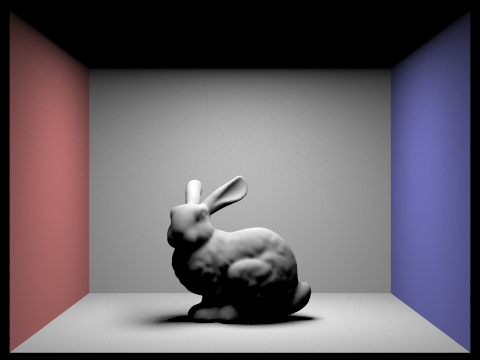
-t 8 -s 1024 -l 4 -m 1 -o 0 -r 480 360 -f bunny_bounce1.png ../dae/sky/CBbunny.dae
The first bounce corresponds to direct illumination. Light travels from the light source to a visible surface and then toward the camera. This produces the main appearance of the bunny, floor, and walls, together with direct shadows.
Bounce 2

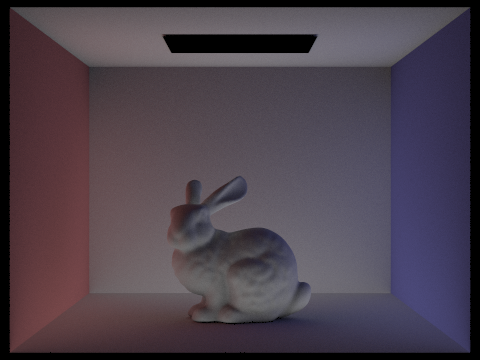
-t 8 -s 1024 -l 4 -m 2 -o 0 -r 480 360 -f bunny_bounce2.png ../../../dae/sky/CBbunny.dae
The second bounce contains light that has reflected from one additional surface before reaching the visible surface.
This is where indirect illumination becomes visually significant. Areas that were completely dark under direct lighting can now receive light reflected from the walls and floor. We can also see the beginning of color bleeding because light reflected from the red or blue wall carries some of that surface's color onto nearby geometry.
Bounce 3

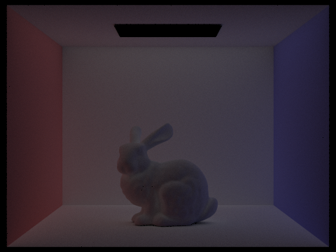
-t 8 -s 1024 -l 4 -m 3 -o 0 -r 480 360 -f bunny_bounce4.png ../dae/sky/CBbunny.dae
The third bounce continues this process one step further. Its overall intensity is lower because the light has now been attenuated by several BSDF interactions, but it still contributes subtle illumination to regions that are difficult to reach through shorter paths.
Compared with the second bounce, the third bounce tends to provide more subtle fill lighting rather than dramatically changing the structure of the image.
Bounce 4

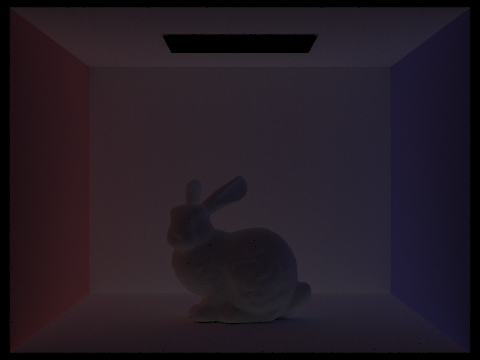
-t 8 -s 1024 -l 4 -m 4 -o 0 -r 480 360 -f bunny_bounce4.png ../dae/sky/CBbunny.dae
Bounce 5

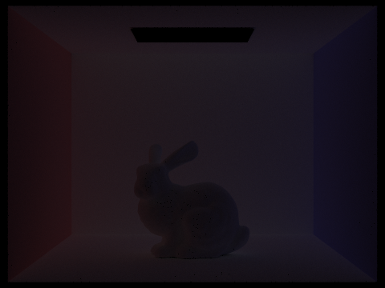
-t 8 -s 1024 -l 4 -m 5 -o 0 -r 480 360 -f bunny_bounce5.png ../dae/sky/CBbunny.dae
As the bounce depth increases, the isolated contribution becomes progressively weaker because energy is reduced at every surface interaction.
The second and third bounces are particularly important because they produce much of the indirect illumination that distinguishes path tracing from a simple rasterization pipeline. Traditional rasterization naturally determines which surfaces are visible and can efficiently evaluate direct local shading, but light bouncing between arbitrary surfaces is not automatically captured by that process. Our recursive path tracer instead follows these transport paths directly, allowing effects such as color bleeding and indirect illumination to emerge naturally from the same light transport model.
Accumulated vs. Individual Bounces
We next compare the individual bounce contributions against accumulated illumination.
Bounce 0

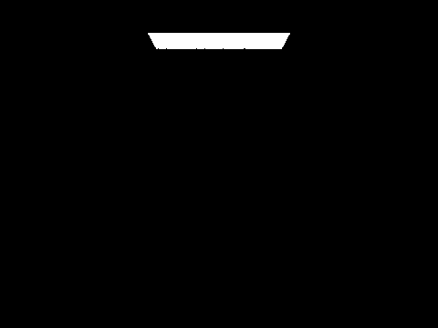
-t 8 -s 1024 -l 4 -m 0 -o 1 -r 480 360 -f bunny_accum0.png ../dae/sky/CBbunny.dae
Bounce 1

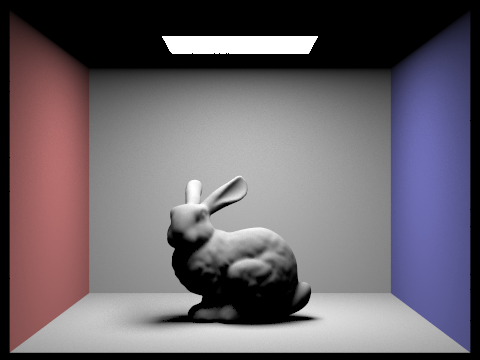
-t 8 -s 1024 -l 4 -m 1 -o 1 -r 480 360 -f bunny_accum1.png ../dae/sky/CBbunny.dae
Bounce 2

-t 8 -s 1024 -l 4 -m 2 -o 1 -r 480 360 -f bunny_accum2.png ../dae/sky/CBbunny.dae
Bounce 3

-t 8 -s 1024 -l 4 -m 3 -o 1 -r 480 360 -f bunny_accum3.png ../dae/sky/CBbunny.dae
Bounce 4

-t 8 -s 1024 -l 4 -m 4 -o 1 -r 480 360 -f bunny_accum4.png ../dae/sky/CBbunny.dae
Bounce 5

-t 8 -s 1024 -l 4 -m 5 -o 1 -r 480 360 -f bunny_accum5.png ../dae/sky/CBbunny.dae
When isAccumBounces=false, each render isolates only the contribution corresponding to the selected bounce depth. This makes the higher-order bounces appear increasingly dim.
When isAccumBounces=true, we instead sum all contributions from zero up to the specified depth:
At depth one, the result mostly contains emission and direct illumination. Adding the second bounce produces a much more noticeable improvement because indirect light begins filling the shadowed regions. The third bounce adds another visible but smaller improvement, while the fourth and fifth bounces mainly introduce increasingly subtle changes.
This illustrates an important property of diffuse global illumination: higher-order paths remain physically meaningful, but their contribution decreases as light loses energy through repeated surface reflections.
Russian Roulette Results
We next enable Russian Roulette and render CBbunny.dae using maximum ray depths of 0, 1, 2, 3, 4, and 100.
Ray Depth 0

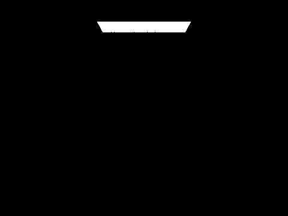
./pathtracer -t 8 -s 1024 -l 4 -m 0 -o 1 -r 480 360 -f bunny_rr0.png ../dae/sky/CBbunny.dae
Ray Depth 1

./pathtracer -t 8 -s 1024 -l 4 -m 1 -o 1 -r 480 360 -f bunny_rr1.png ../dae/sky/CBbunny.dae
Ray Depth 2

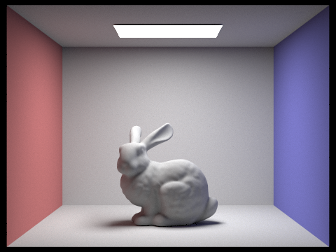
./pathtracer -t 8 -s 1024 -l 4 -m 2 -o 1 -r 480 360 -f bunny_rr2.png ../dae/sky/CBbunny.dae
Ray Depth 3

./pathtracer -t 8 -s 1024 -l 4 -m 3 -o 1 -r 480 360 -f bunny_rr3.png ../dae/sky/CBbunny.dae
Ray Depth 4

./pathtracer -t 8 -s 1024 -l 4 -m 4 -o 1 -r 480 360 -f bunny_rr4.png ../dae/sky/CBbunny.dae
Ray Depth 100

./pathtracer -t 8 -s 1024 -l 4 -m 100 -o 1 -r 480 360 -f bunny_rr100.png ../dae/sky/CBbunny.dae
At low maximum depths, the available path lengths are still explicitly limited, so increasing the depth introduces progressively more indirect illumination.
The depth-100 image demonstrates the purpose of Russian Roulette more clearly. Although we technically allow extremely long paths, most rays do not actually survive anywhere close to 100 bounces. Instead, random termination prevents the computational cost from growing indefinitely.
At the same time, there remains a nonzero probability of sampling long paths, so we do not introduce the same hard cutoff that would result from simply terminating every ray after a small fixed number of bounces.
Samples per Pixel
Finally, we examine how the number of camera samples affects the convergence of our global illumination estimator. We keep the number of light rays fixed at 4 and render the same scene using increasing numbers of samples per pixel.
Samples-per-pixel 1

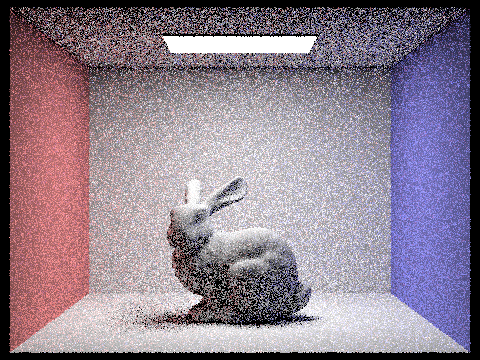
-t 8 -s 1 -l 4 -m 5 -o 1 -r 480 360 -f bunny_s1.png ../dae/sky/CBbunny.dae
Samples-per-pixel 2

-t 8 -s 2 -l 4 -m 5 -o 1 -r 480 360 -f bunny_s2.png ../dae/sky/CBbunny.dae
Samples-per-pixel 4

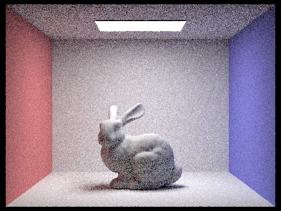
-t 8 -s 4 -l 4 -m 5 -o 1 -r 480 360 -f bunny_s4.png ../dae/sky/CBbunny.dae
Samples-per-pixel 8

-t 8 -s 8 -l 4 -m 5 -o 1 -r 480 360 -f bunny_s8.png ../dae/sky/CBbunny.dae
Samples-per-pixel 16

-t 8 -s 16 -l 4 -m 5 -o 1 -r 480 360 -f bunny_s16.png ../dae/sky/CBbunny.dae
Samples-per-pixel 64

-t 8 -s 64 -l 4 -m 5 -o 1 -r 480 360 -f bunny_s64.png ../dae/sky/CBbunny.dae
Samples-per-pixel 1024

-t 8 -s 1024 -l 4 -m 5 -o 1 -r 480 360 -f bunny_s1024.png ../dae/sky/CBbunny.dae
At one sample per pixel, the result contains a large amount of noise because each pixel estimates the global illumination using only a very small number of randomly generated paths. Some paths happen to encounter high-energy light transport while others contribute almost nothing, producing large variations between neighboring pixels.
As we increase the sample count, these random variations begin to average out. At 4 and 8 samples per pixel, the overall structure of the scene becomes clearer, although indirect illumination remains visibly noisy. At 16 and 64 samples, the lighting becomes substantially more stable and effects such as color bleeding become easier to distinguish. By 1024 samples per pixel, the Monte Carlo estimate has converged much further and the remaining noise is significantly reduced.
Importantly, increasing the sample count does not change the underlying lighting model. Each image estimates the same global illumination integral. We are simply averaging more random light paths, reducing the variance of that estimate and moving progressively closer to the expected result.
Part 5: Adaptive Sampling (20 Points)
Up to this point, we have reduced noise mainly by increasing the number of samples per pixel. While this works, uniformly assigning the same large number of samples to every pixel is often wasteful.
Different parts of an image can have very different levels of variance. A pixel looking at a uniformly illuminated wall may converge after only a small number of samples, while a pixel near a soft shadow, object boundary, or complicated indirect-lighting region may require hundreds or thousands of samples before its estimate becomes stable.
Instead of treating every pixel equally, we implement adaptive sampling, where we continuously estimate how well each pixel has converged and stop tracing additional rays once we are sufficiently confident in its current value.
Measuring Pixel Convergence
For every ray sample through a pixel, our path tracer returns an RGB radiance value. Since adaptive sampling needs a single scalar quantity for statistical analysis, we convert this radiance into its illuminance using Vector3D::illum().
Let the illuminance of the kth sample be
After taking n samples, we want to estimate the mean illuminance of the pixel and how much variation exists between the samples.
The mean is
while the sample variance is
A small variance means our samples are producing relatively similar values, which suggests that the pixel has already stabilized. A large variance means different paths are still producing significantly different radiance values, so we should continue sampling.
Computing the Statistics Incrementally
We could store the illuminance of every individual sample and calculate the statistics afterward, but this would require unnecessary memory.
Instead, while sampling each pixel, we only maintain two accumulated values:
and
Whenever we obtain a new sample x, we simply update
and
Using these two values, we can recover the mean directly:
and calculate the sample variance as
This is convenient because the amount of statistical information we store remains constant regardless of whether a pixel receives 32 samples or 2048 samples.
Confidence Interval
Knowing the variance by itself does not completely tell us whether we should stop sampling. The uncertainty of our estimated mean also depends on how many samples we have taken.
As n increases, even a distribution with some variance can still give us a very reliable estimate of its mean.
We therefore calculate a 95% confidence interval around our current estimate.
The half-width of this interval is
The value 1.96 comes from the 95% confidence interval of a normal distribution.
We can interpret this as saying that our estimated pixel illuminance lies approximately inside
with 95% confidence.
As we collect more samples, I becomes smaller. Similarly, if our samples already have very little variance, becomes small and the confidence interval also shrinks.
Deciding When to Stop
Rather than requiring the absolute confidence interval to fall below some fixed value, we compare it to the current mean illuminance:
In our normal configuration,
so we stop sampling when the width of our uncertainty is sufficiently small relative to the estimated brightness of the pixel.
This relative comparison is important because image intensities can vary dramatically. An uncertainty of 0.01 may be insignificant for a bright pixel but very noticeable for a pixel whose average illuminance is only 0.02.
Once this condition becomes true, we consider the pixel converged and stop generating additional camera rays for it. Otherwise, we continue sampling until either the pixel converges or we reach the maximum number of samples specified by ns_aa.
Checking in Batches
Computing the mean, variance, square root, and confidence interval after every sample would introduce unnecessary overhead, especially for pixels that eventually require thousands of samples.
Instead, we divide sampling into batches controlled by samplesPerBatch.
This gives us a tradeoff between how precisely we detect convergence and how much time we spend performing the statistical test itself.
A smaller batch size can stop converged pixels sooner, but requires more frequent convergence calculations. A larger batch size performs fewer checks but may generate several unnecessary samples after the pixel has effectively converged.
Recording the Number of Samples
After a pixel finishes, we also store its actual number of samples inside sampleCountBuffer.
This information does not affect the rendered image itself. Instead, it allows us to visualize how adaptive sampling distributed computational effort across the image.
The sample-rate visualization represents the ratio
using color.
Regions shown closer to blue required relatively few samples before converging, while regions closer to red consumed a much larger fraction of the available sample budget.
Adaptive Sampling Results
To evaluate adaptive sampling, we render two scenes with a maximum of at least 2048 samples per pixel, one sample per light, and a maximum ray depth of at least five.
Scene 1: Cornell Box Bunny


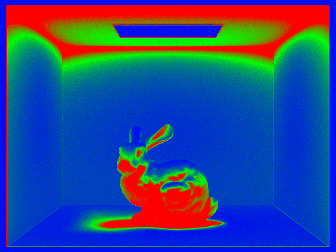
./pathtracer -t 8 -s 2048 -a 64 0.05 -l 1 -m 5 -r 480 360 -f bunny.png ../dae/sky/CBbunny.dae
The sample-rate image shows that our renderer does not distribute samples uniformly across the scene. Large, relatively smooth regions of the Cornell box can converge using comparatively few samples, while more difficult regions require significantly more computation.
In particular, pixels around geometry boundaries, shadows, and regions dominated by indirect illumination tend to require more samples. These regions naturally exhibit higher variance because small differences in sampled paths can produce significantly different radiance values.

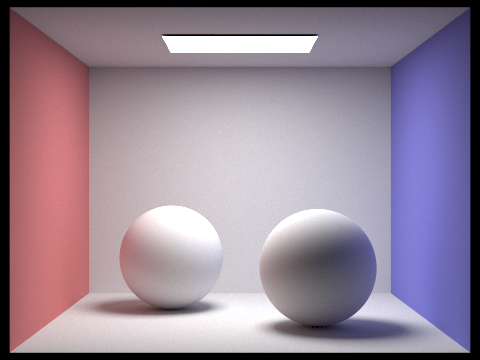

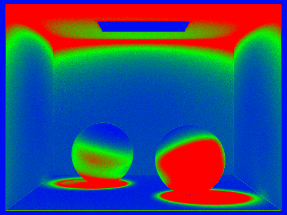
t 8 -s 2048 -a 64 0.05 -l 1 -m 5 -r 480 360 -f adaptive_spheres.png ../dae/sky/CBspheres_lambertian.dae
Again, we can see that regions with stable lighting (area exposed to direct lighting) converge quickly while regions involving more complicated visibility or light transport continue sampling for much longer.
Discussion
The sampling-rate images demonstrate why using a fixed high sampling rate for the entire image is inefficient. Many pixels reach a stable estimate long before they use all 2048 available samples. Continuing to trace rays through these pixels would provide only a small improvement while consuming significant computation.
Simple pixels can terminate early, while difficult pixels are allowed to continue using more of that budget. This is particularly useful for path tracing because the variance of neighboring pixels can be extremely different. A smooth wall under stable illumination may converge almost immediately, while a nearby pixel in a soft shadow or indirect-lighting region may require orders of magnitude more samples.
By estimating convergence independently for every pixel, we can produce a similarly noise-free final image while concentrating our rendering effort on the regions where additional samples provide the most benefit.
AI Disclose
I used generative AI Model, ChatGPT 5.6 Sol to polish my writings and expression for this writeup, debug code to detect malfunction edge cases, and massively generate the commands needed to render the images required for the write up.
UC Berkeley Soda 330 Instructional Computer was used in completing this project and write up.